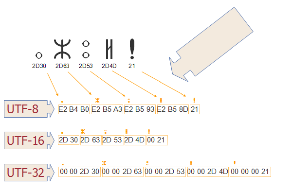

Intended audience:
XHTML/HTML-Autoren (die Web-Editoren/Texteditoren oder Scripte benutzen), Script-Entwickler (PHP, JSP u.a.), CSS-Entwickler, Webprojekt-Manager und alle, die mit den Begriffen rund um Zeichencodierung noch nicht vertraut sind und die Grundlagen verstehen möchten
Dieser Artikel führt in einige Grundkonzepte ein, die man zum Verständnis anderer Artikel zu Zeichen und Zeichencodierungen benötigt.
Unicode ist ein universeller Zeichensatz. Es ist ein Standard, der in einem einzigen Zeichensatz alle Zeichen definiert, die man benötigt, um die allermeisten lebenden Sprachen auf dem Computer zu schreiben.
Ziel ist es (und es wurde bereits weitestgehend erreicht), dass Unicode eine Übermenge aller Zeichensätze ist, die bisher codiert wurden.
Text im Computer oder im Web setzt sich aus Zeichen zusammen. Zeichen repräsentieren die Buchstaben des Alphabets, Interpunktionszeichen und andere Symbole.
In der Vergangenheit haben verschiedene Organisationen verschiedene Zeichensätze zusammengestellt und Zeichencodierungen für diese entworfen – ein Zeichensatz deckt die in lateinischen Buchstaben geschriebenen westeuropäischen Sprachen ab (ausschließlich der EU-Länder Bulgarien und Griechenland), ein andererer bestimmte fernöstliche Sprachen (bspw. Japanisch), wieder andere gehören zu den vielen Zeichensätzen, die eher ad hoc entworfen wurden, um irgendeine Sprache der Welt abzubilden.
Es ist aber weder garantiert, dass eine Applikation alle Zeichencodierungen unterstützt, noch dass eine bestimmte Zeichencodierung alle Anforderungen zur Darstellung einer bestimmten Sprache erfüllt. Außerdem ist es nicht möglich, verschiedene Zeichencodierungen auf derselben Webseite oder in einer Datenbank zu kombinieren, sodass es schwierig ist, mehrsprachige Seiten mit den „traditionellen“ Ansätzen von Zeichencodierungen zu unterstützen.
Das Unicode-Consortium bietet einen einzigen großen Zeichensatz an, der zum Ziel hat, alle Zeichen zu enthalten, die für alle Schriftsysteme der Welt benötigt werden, einschließlich altertümlicher Schriften (wie bspw. Keilschrift, gotische Schrift und ägyptische Hieroglyphen). Er ist heutzutage fundamental für die Architektur des Webs und der Betriebssysteme und wird von allen bedeutenden Webbrowsern und Applikationen unterstützt. Der Unicode-Standard beschreibt auch Eigenschaften und Algorithmen zur Zeichenverarbeitung.
Dieser Ansatz macht es wesentlich einfacher, mit mehrsprachigen Webseiten oder Systemen umzugehen, und erfüllt die Anforderungen besser als die meisten traditionellen Zeichencodierungssyteme.
Das folgende Bild zeigt die Unicode-Bereiche in der Unicode-Version 5.2:
Die ersten 65536 Zeichencodepositionen im Unicode-Zeichensatz bilden die sogenannte mehrsprachige Grundebene (engl. Basic Multilingual Plane, BMP). Die BMP enthält die meisten gebräuchlichen Zeichen.
Die Zahl 65536 ist 2 hoch 16. Das ist die Anzahl aller möglichen Bitkombinationen in 2 Bytes.
Der Unicode-Zeichensatz bietet auch Raum für etwa eine Million weiterer Zeichencodepositionen. Zeichen in diesem Bereich werden ergänzende Zeichen (engl. supplementary characters) genannt.
Es ist sehr wichtig, die Konzepte Zeichensatz und Zeichencodierung sorgfältig zu unterscheiden.
Ein Zeichensatz oder Repertoire (engl. character set) umfasst die Menge der Zeichen, die man für einen bestimmten Zweck verwendet – das können diejenigen sein, die man für
westeuropäische Sprachen im Computer benötigt, oder diejenigen, die ein chinesisches Kind in der Schule in der 3. Klasse lernt (hat nichts mit Computern zu tun).
Ein codierter Zeichensatz (engl. coded character set) ist eine Menge von Zeichen, wobei jedem Zeichen eine eindeutige Nummer zugeordnet ist.
Die Elemente eines codierten Zeichensatzes sind die Zeichencodes (engl. code points). Der Zeichencodewert bestimmt die Position eines Zeichens im codiertem Zeichensatz. So ist bspw. der Zeichencode des Buchstaben á im Unicode-Zeichensatz 225 in dezimaler bzw. E1 in hexadezimaler Schreibweise. (Für Zeichencodes wird üblicherweise die hexadezimale Schreibweise verwendet, so auch hier.)
Codierte Zeichensätze werden auch code pages genannt.
Die Zeichencodierung (engl. character encoding) gibt an, wie der codierte Zeichensatz zur Verarbeitung im
Computer auf Bytes abgebildet wird. Das untere Bild zeigt, wie Tifinagh-Zeichen (Berberschrift) und deren Zeichencodes unter Verwendung der UTF-8-Codierung auf Bytesequenzen im Speicher abgebildet werden. Die Zeichencodewerte sind für jedes Zeichen unter dessen Glyphe (der visuellen Repräsentation) oben im Diagramm angegeben. Die Pfeile zeigen, wie die Zeichencodes auf Bytesequenzen abgebildet werden, wobei jedes Byte durch eine Hexadezimalzahl mit 2 Hexadezimalziffern dargestellt wird. Die Tifinagh-Zeichencodes werden auf jeweils 3 Bytes abgebildet, das Ausrufezeichen auf eins.
Diese Erklärung vereinfacht die genaue Nomenklatur bei Zeichencodierungen etwas. Eine genauere Beschreibung findet sich im Unicode Technical
Report #17.
Ein Zeichensatz, mehrere Zeichencodierungen: Viele Zeichencodierungsstandards – wie die der ISO-8859-Serie – verwenden ein Byte für jedes Zeichen und die Codierung ist
einfach die Zuordnung der Nummer der Position des Zeichens im codierten Zeichensatz. Der Buchstabe A bspw.
ist im codierten Zeichensatz ISO 8859-1 an der 65. Position (bei 0 beginnend) und wird zur Repräsentation im Computer durch
den Bytewert 65 codiert. Bei ISO 8859-1 ist das für alle Zeichen so.
Bei Unicode ist das allerdings nicht so einfach. Obwohl der Zeichencode für den Buchstaben á im
Unicode-Zeichensatz immer 225 (dezimal) ist, wird er in UTF-8 im Computer durch 2 Bytes dargestellt. Es gibt also keine triviale
Eins-zu-eins-Verknüpfung zwischen dem Zeichencode und dem codiertem Wert für dieses Zeichen.
Desweiteren kann in Unicode dasselbe Zeichen auf verschiedene Arten codiert werden. Der Buchstabe á bspw. kann durch 2 Bytes in einer Zeichencodierung dargestellt werden und durch 4 Bytes in einer anderen. Die Codierungsformen, die für Unicode
verwendet werden können, sind UTF-8, UTF-16 und UTF-32.

UTF-8 verwendet 1 Byte für ASCII-Zeichen, 2 Bytes für Zeichen aus einigen anderen Bereichen und 3
Bytes für den Rest der BMP. Ergänzende Zeichen benötigen 4 Bytes.
UTF-16 verwendet 2 Bytes für alle Zeichen der BMP und 4 Bytes für ergänzende Zeichen.
UTF-32 verwendet 4 Bytes für alle Zeichen.
In der folgenden Tabelle werden in der ersten Zeile die Positionen der Zeichen im Unicode-Zeichensatz angegeben.
In den nächsten Zeilen stehen die Bytewerte, durch die das jeweilige Zeichen in der jeweiligen Zeichencodierung dargestellt wird.
Für XML und HTML (ab Version 4.0) ist als Dokument-Zeichensatz das Universal Character Set (UCS) festgelegt, das durch die Standards ISO/IEC 10646 und Unicode definiert wird.
(Der Einfachheit halber und der gängigen Praxis entsprechend sagen wir zum UCS hier einfach Unicode.)
Das logische Modell, welches beschreibt, wie XML bzw. HTML verarbeitet wird, ist in Hinblick auf den Unicode-Zeichensatz beschreiben. (Praktisch heißt das, dass Browser gewöhnlich alle Texte intern in Unicode konvertieren.)
Das bedeutet nicht, dass alle HTML- und XML-Dokumente als Unicode codiert werden müssen; sondern es bedeutet, dass diese Dokumente nur Zeichen enthalten dürfen, die in Unicode definiert sind. Für ein Dokument kann jede Zeichencodierung gewählt werden, wenn sie entsprechend deklariert wird und die von ihr verkörperten Zeichen eine Teilmenge des Unicode-Repertoires sind.
Ein Zeichen-Escape ist eine Möglichkeit, ein Zeichen darzustellen ohne es selbst zu verwenden.
Es gibt bspw. keine Möglichkeit, das hebräische Zeichen א in einem Dokument direkt darzustellen, wenn man als Zeichencodierung ISO 8859-1
verwendet (welche die westeuropäischen Sprachen abdeckt). Eine Möglichkeit, dieses Zeichen einzufügen, ist, das Zeichen-Escape
א dafür einzusetzen. Da der Dokument-Zeichensatz Unicode ist, sollte der Browser erkennen, dass dies das hebräische Aleph darstellt.
Wenn ein Server ein Dokument an einen Browser ausliefert, dann sendet er auch zusätzliche Informationen mit – im sogenannten HTTP-Header. Es folgt ein Beispiel für die Art der Informationen über ein Dokument, die im HTTP-Header bei der Übertragung eines Dokuments vom Server zum Client mitgeschickt werden.
In diesem Beispiel ist die Angabe der Zeichencodierung für das Dokument in der vorletzten Zeile enthalten.
HTTP/1.1 200 OK
Date: Wed, 05 Nov 2003 10:46:04 GMT
Server: Apache/1.3.28 (Unix) PHP/4.2.3
Content-Location: CSS2-REC.en.html
Vary: negotiate,accept-language,accept-charset
TCN: choice
P3P: policyref=http://www.w3.org/2001/05/P3P/p3p.xml
Cache-Control: max-age=21600
Expires: Wed, 05 Nov 2003 16:46:04 GMT
Last-Modified: Tue, 12 May 1998 22:18:49 GMT
ETag: "3558cac9;36f99e2b"
Accept-Ranges: bytes
Content-Length: 10734
Connection: close
Content-Type: text/html; charset=UTF-8
Content-Language: en
Bei dynamisch per Script generierten Dokumenten kann man diese Informationen explizit zum HTTP-Header hinzufügen.
Bei statischen Dateien kann der Server diese Informationen mit den Dateien assoziieren. Wie der Server einzustellen ist, damit er die Zeichencodierung auf diese Weise angibt, ist von Server zu Server verschieden.
Das sollte mit dem Server-Administrator geklärt werden.
Apache-Server bspw. geben üblicherweise die voreingestellte Zeichencodierung an, die durch Nutzereinstellungen überschrieben werden kann.
Ein Nutzer könnte bspw. folgende Zeile zu einer .htaccess-Datei hinzufügen, um alle Dateien mit der Endung .html in diesem und allen Unterverzeichnissen als UTF-8 auszuliefern: